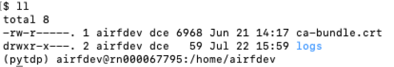

Configuration
For full documentation of Apache Airflow visit airflow.apache.org.
Token
Info
Prefer to Get Token for further details on how to get token on Hashicorp Vault Web UI
Verify
- Navigate to your $AIRFLOWHOME and verify if ca-certificate file is in the home directory
 - The absolute path to ca-certificate file: /home/airfdev/ca-bundle.crt
This is the value of your verify in backend_kwargs environment variable.
Hashicorp Vault Secrets Backend
To enable Hashicorp Vault to retrieve Airflow connection/variable, specify VaultBackend as the backend in [secrets] section of airflow.cfg.
Here is a sample configuration:
[secrets]
backend = airflow.providers.hashicorp.secrets.vault.VaultBackend
backend_kwargs = {"connections_path": "connections", "variables_path": "variables", "mount_point": "airflow", "url": "http://127.0.0.1:8200"}
export AIRFLOW__SECRETS__BACKEND=airflow.providers.hashicorp.secrets.vault.VaultBackend
export VAULT_TOKEN="token"
export AIRFLOW__SECRET__BACKEND_KWARGS={\"token\": \"${VAULT_TOKEN}\", \"connections_path\": \"connections\", \"vairables_path\": \"variables\", \"mount_point\": \"airflow/\", \"url\": \"https://127.0.0.1:8200/\"}
Info
- Prefer to Create Secret for further details on the values of mount_point, namespace, and config_path.
- For Vault running with self signed certificates Add “verify”: “absolute path to ca-certificate file”
- The default KV version engine is 2.
Optional lookup
Optionally connections, variables, or config may be looked up exclusive of each other or in any combination. This will prevent requests being sent to Vault for the excluded type.
If you want to look up some and not others in Vault you may do so by setting the relevant *_path parameter of the ones to be excluded as null.
For example, if you want to set parameter config_path to "mui", and not look up variables, your configuration file should look like this:
[secrets]
backend = airflow.providers.hashicorp.secrets.vault.VaultBackend
backend_kwargs = {"connections_path": null, "variables_path": null, "mount_point": "airflow", "config_path": "mui", "url": "http://127.0.0.1:8200"}
export AIRFLOW__SECRETS__BACKEND=airflow.providers.hashicorp.secrets.vault.VaultBackend
export VAULT_TOKEN="token"
export AIRFLOW__SECRET__BACKEND_KWARGS={\"token\": \"${VAULT_TOKEN}\", \"connections_path\": null, \"vairables_path\": null, \"config_path\": \"mui\", \"mount_point\": \"DEV/dev\", \"url\": \"https://pam-dev.uhc.com/\", \"verify\: \"/home/airfdev/ca-bundle.crt\", \"namespace\": \"OPTUM/APP/AIRFLOW\"}
_SECRET Config Options
The purpose of _SECRET Config Options is to not store passwords and sensitive information in plain text files.
_SECRET config options can be set using a corresponding environment variable.
For example, AIRFLOW__DATABASE__SQL_ALCHEMY_CONN is saved in plain text in configuration file:
export AIRFLOW__DATABASE__SQL_ALCHEMY_CONN=mysql://[dbuser]:[dbPassword]@[hostname]:3306/[dbname]
export AIRFLOW__DATABASE__SQL_ALCHEMY_CONN_SECRET="AIRFLOW__DATABASE__SQL_ALCHEMY_CONN"
Configuration Reference
Refer to Configuration Reference for the list of all the available Airflow configurations that you can set in airflow.cfg file or using environment variables.